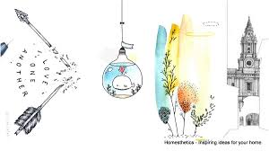

WHAT IS VISUAL ART??
ELEMENTS
EQUIPMENTS
What is Visual Art
The visual arts are art forms such as painting, drawing, printmaking, sculpture, ceramics, photography, video, filmmaking, design, crafts, and architecture. Many artistic disciplines such as performing arts, conceptual art, textile arts also involve aspects of visual arts as well as arts of other types.
Drawing
The term drawing is applied to works that vary greatly in technique. It has been understood in different ways at different times and is difficult to define
The Shorter Oxford Dictionary defines drawing as:
'the formation of a line by drawing some tracing instrument from point to point of a surface; representation by lines; delineation as distinguished from painting...the arrangement of lines which determine form.'
Drawing and Painting are apparentally the same.The main difference is that drawing is a technique where pictures are depicted by lines and painting is a technique where pictures are depicted by applying color to a surface.
"Drawing is a Painting mage of lines and strokes (of pencil,charcoal etc), without color. Whereas,Painting is just Drawing with color applied in different mediums."

Everythig in the world is a subject for Drawing, yet what you draw is not important.what is of utmost Impotance is tht you enjoy drawing and feel you are learning something more,as a result, about the visual world.